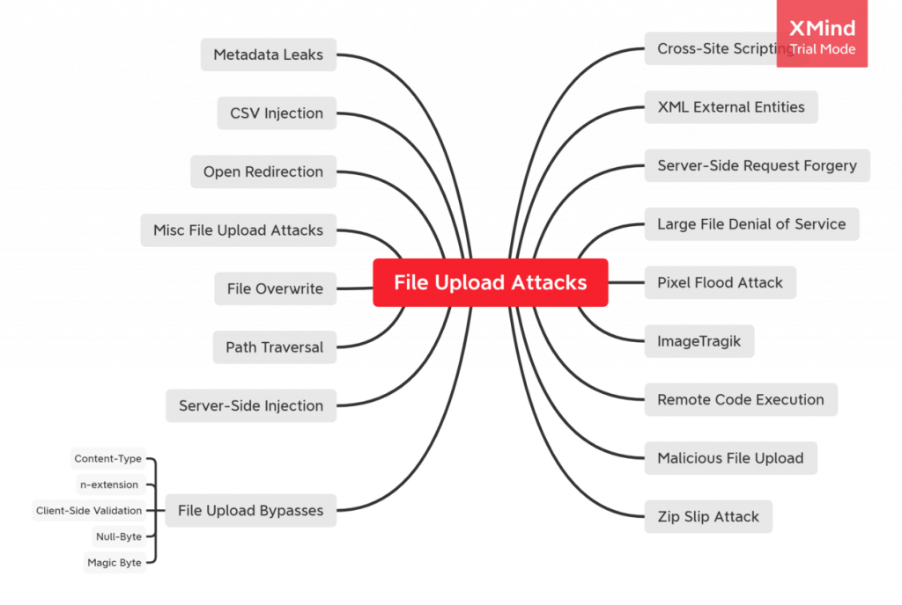
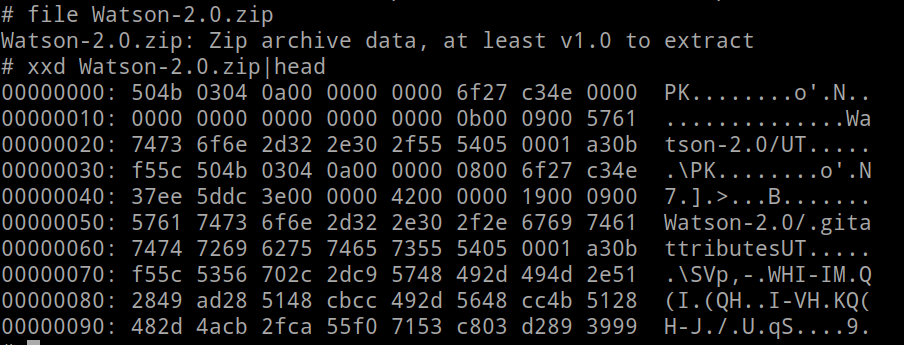

| File format trickey
| magic bytes manuplation
File upload is one of the most common functionalities application has to offer. This functionality, however, is implemented in many different forms based on the application’s use case.

ZipSlip attack is an interesting attack vector that can be tested when the application accepts archives in file upload functionality and later unarchive it for further processing. Zip Slip is a widespread critical archive extraction vulnerability, allowing attackers to write arbitrary files on the system, typically resulting in remote command execution. It was discovered and responsibly disclosed by the Snyk Security team ahead of public disclosure on 5th June 2018, and affects thousands of projects, including ones from HP, Amazon, Apache, Pivotal, and many more. File overwrite is an interesting attack during the file upload when a user can control and arbitrarily set the path where the file should be stored. This can be considered similar to the Zip Slip and Path Traversal attack but assuming the scenario where it is possible to directly upload a file and change its path to overwrite an existing system file, this is kept as a separate issue.
File Format Trickery:
- Bypass the file format upload section by adding fake extension
- Bypass uploading filters by changing into the file magic bytes
- Burpsuite bypass the uploading filter using the response manuplation technique.
Unrestricted File Upload
Uploaded files represent a significant risk to applications. The first step in many attacks is to get some code to the system to be attacked. Then the attack only needs to find a way to get the code executed. Using a file upload helps the attacker accomplish the first step. There are really two classes of problems here. The first is with the file metadata, like the path and file name. These are generally provided by the transport, such as HTTP multi-part encoding. This data may trick the application into overwriting a critical file or storing the file in a bad location. You must validate the metadata extremely carefully before using it. The other class of problem is with the file size or content. The range of problems here depends entirely on what the file is used for. See the examples below for some ideas about how files might be misused. To protect against this type of attack, you should analyse everything your application does with files and think carefully about what processing and interpreters are involved. 
Weak Protections and Bypassing Methods
Finding missed extensions that can be executed on the server side or can be dangerous on the client side (e.g. ".php5", ".pht", ".phtml", ".shtml, ".asa", ".cer", ".asax", ".swf", or ".xap"). Finding flaws in a web server configuration when it parses files with double extensions or it executes them by providing a sensitive extension after a delimiter such as "/" or ";" character (e.g. "/file.jpg/index.php" when the "file.jpg" file contains PHP code and has been uploaded)
